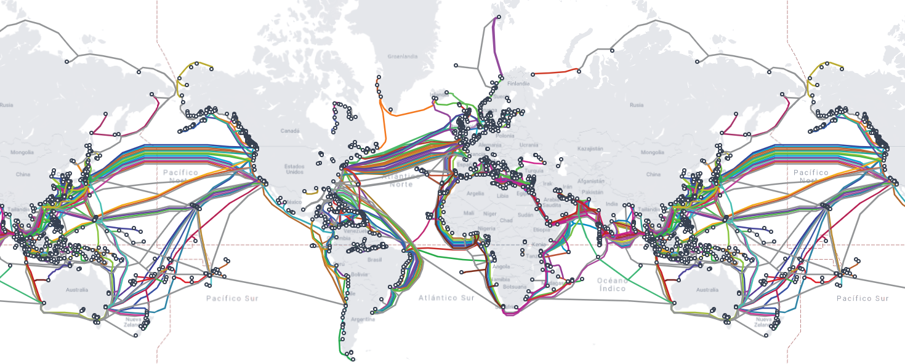

From a formal definition standpoint, a network is a collection of interconnected device taht aims to talk each other.
But what does it mean?
Think about it:

Do you remember the last event in where you had to talk to a lot of different people? It could have been for work-related duties, like reunions, or meetings, language exchange or.. whatever?
Well, the purpose of that event was to create a sort of "network" of interconnected humans in a way that information could be transferable and intended by all the partecipants. Isn't it?
A project to show, a small talk to handle. Each of us probably faced one of this context, so we should be quite familiar with this. Following this reasoning, Networking aims to create a network
of device that can share some kind of data among them.
As like human talks: to let the information be understood by others, it's really important to use the same idioms, right? Right now, for example I'm using english to let this things integrate in
your understandings. But what If I use spanish or italian for example? Potreste ancora comprendermi? Quite hard, right?
For this reason, first thing to do for a proper communication is elect a specific language to talk. After that, we know every language has it's own set of rules, right? We have the grammar which is the foundation of
the syntax: I need to properly order the words in a way that corresponds to our grammar rules; in most of language, some common syntax method are: subject + verb + object/complement, like "The man is over there".
Of course, we could however understand each other if I say "the man over there is". It could be sound a little bit strange, but it would be still intellegible; that's because we are familiar with the idiom and our brain
is wired to fill or reorder something seen or heard in a more ordered and meaningful way. This is because there is another aspect of the language: the semantic, the parte charged of carry the general meaning of a sentence.
For computer is quite the same: they have a grammar they use to share information/data among them; of course things get a little bit complicated because computers are completely blind, they cannot actually see each other, unless
some informations is provided to them, to let them speak. The grammar they use is deeply tied to an actual conceptual model, developed by ISO (International Organization for Standardization), called OSI (Open Systems Interconnection).
The objective of this model is to provide an abstraction of the different communication level that take place during a communication. This definition could be strange at a first sight, but think about how human communication occurs:
Each reference is subject to a process called "encapsulation", that means: each layer is embedded into the higher one in hierarchy. This allows each device which packets pass through can just focus on the part of the Layer it should care of.
This means that with encapsulation a Layer 3 devices, so a device that is actually able to understand Layer 3 informations, like a Router should only care about the information within Layer 3. A switch, a Layer 2 device, will only care about Layer 2 informations, and so on. Of course, passing through a device
means de-encapsulate each layer of informations. That is: I send you a "Hello" via whatsapp, so the "Hello" message, that is the Data, will be encapsulated starting from Layer 7 to Layer 2, because Layer 1 is the actual physical media, so it's just something useful for us. So first device to look at the packet is
the Switch at Layer 2. After that the Switch will pass it to the router, as Layer 3. All the above Layers will be used by the high-level application or service that we are requesting.

First rule for a successfull communication: you need to know WHERE people are, right? We need to establish an actual path toward maybe one of your friend or your parents. We need to establish the communication channel: you'll reach them with a call? or maybe better a text message? What if you
decide to physically reach them?
Physical layer works the sames: it represents the actual physical connection between devices. They can be wired like an Ethernet cable, or can be wireless like a WiFi network, a Bluetooth or radio communication. Despite the type, this layer is important because it provides the communication schema
via which encode/decode the data is sent. Let's break it down.
You are opening your Chrome or Safari browser (or whatever you use) for a search purpose. You need to reach out you "www.google.com" site to start looking for a specific query you solicited. Of course there are tons of kilometers separating both of them, plus a whole ocean. So where your query is supposed to be sent? 
We have assumed that a communication takes place whenever there is a physical path that is physically connecting devices. These can be wired or wireless, and of course, state the distance from google's server the most useful one is a wired connection, for its stability and tolerance against interference.
This means that does exist TONS of submarine cables that are connecting a lot of device
There are no actual protocols here; just encoding schemas depnding on the type of physical mead selected.